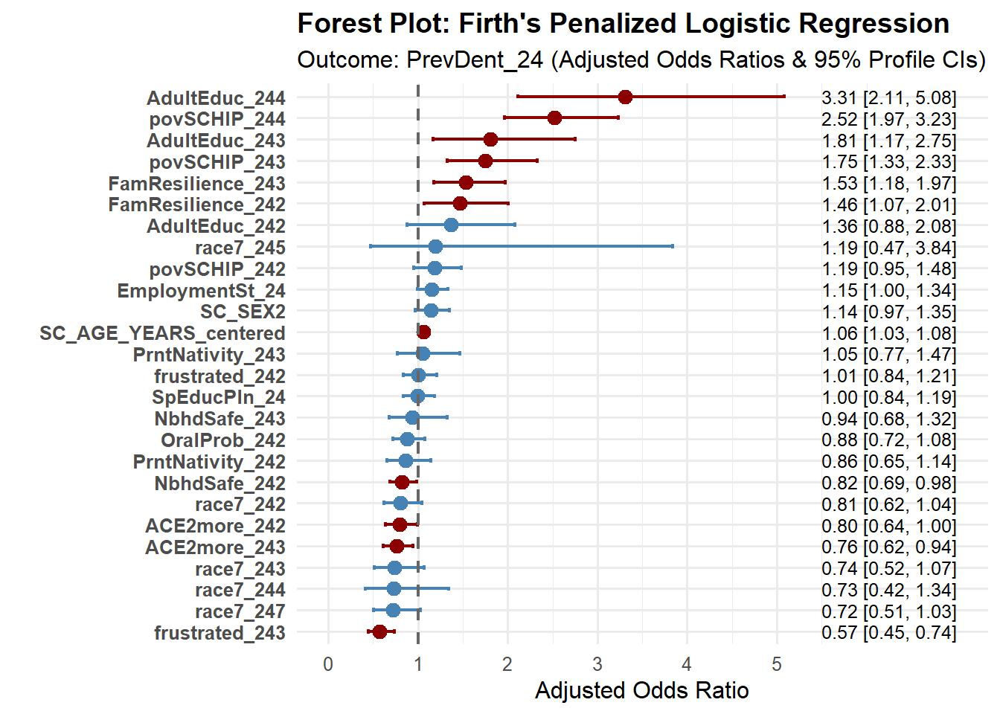

Last updated: 2026-10-14
Checks: 6 1
Knit directory: Collaborations/
This reproducible R Markdown analysis was created with workflowr (version 1.7.2). The Checks tab describes the reproducibility checks that were applied when the results were created. The Past versions tab lists the development history.
The R Markdown file has unstaged changes. To know which version of
the R Markdown file created these results, you’ll want to first commit
it to the Git repo. If you’re still working on the analysis, you can
ignore this warning. When you’re finished, you can run
wflow_publish to commit the R Markdown file and build the
HTML.
Great job! The global environment was empty. Objects defined in the global environment can affect the analysis in your R Markdown file in unknown ways. For reproduciblity it’s best to always run the code in an empty environment.
The command set.seed(20210523) was run prior to running
the code in the R Markdown file. Setting a seed ensures that any results
that rely on randomness, e.g. subsampling or permutations, are
reproducible.
Great job! Recording the operating system, R version, and package versions is critical for reproducibility.
Nice! There were no cached chunks for this analysis, so you can be confident that you successfully produced the results during this run.
Great job! Using relative paths to the files within your workflowr project makes it easier to run your code on other machines.
Great! You are using Git for version control. Tracking code development and connecting the code version to the results is critical for reproducibility.
The results in this page were generated with repository version 64819d6. See the Past versions tab to see a history of the changes made to the R Markdown and HTML files.
Note that you need to be careful to ensure that all relevant files for
the analysis have been committed to Git prior to generating the results
(you can use wflow_publish or
wflow_git_commit). workflowr only checks the R Markdown
file, but you know if there are other scripts or data files that it
depends on. Below is the status of the Git repository when the results
were generated:
Ignored files:
Ignored: analysis/.Rhistory
Unstaged changes:
Modified: analysis/2026_0801_LeeZa.Rmd
Note that any generated files, e.g. HTML, png, CSS, etc., are not included in this status report because it is ok for generated content to have uncommitted changes.
These are the previous versions of the repository in which changes were
made to the R Markdown (analysis/2026_0801_LeeZa.Rmd) and
HTML (docs/2026_0801_LeeZa.html) files. If you’ve
configured a remote Git repository (see ?wflow_git_remote),
click on the hyperlinks in the table below to view the files as they
were in that past version.
| File | Version | Author | Date | Message |
|---|---|---|---|---|
| Rmd | 64819d6 | Han | 2026-10-09 | 10/9/2026 |
| html | 64819d6 | Han | 2026-10-09 | 10/9/2026 |
| Rmd | 1397652 | Han | 2026-10-09 | 10/9/2026 |
| html | 1397652 | Han | 2026-10-09 | 10/9/2026 |
| Rmd | 7d94ecf | han | 2026-09-28 | 9/28/2026 |
| html | 7d94ecf | han | 2026-09-28 | 9/28/2026 |
| Rmd | 94d3540 | han | 2026-09-21 | 9/21/2026 |
| html | 94d3540 | han | 2026-09-21 | 9/21/2026 |
| html | aa31287 | han | 2026-09-21 | 9/21/2026 |
| Rmd | 6b03305 | han | 2026-09-18 | 9/18/2026 |
| html | 6b03305 | han | 2026-09-18 | 9/18/2026 |
| Rmd | ab91261 | han | 2026-09-02 | 9/2/2026 |
| html | ab91261 | han | 2026-09-02 | 9/2/2026 |
| Rmd | 973b6ca | han | 2026-09-01 | 9/1/2026 |
| html | 973b6ca | han | 2026-09-01 | 9/1/2026 |
#nsduh_data=as_tibble(read_excel((file.path(root, "../2026/202608/LeeZa/NSDUH data 12 to 17 years old for analysis.xlsx"))))
nsduh_data=as_tibble(read.csv((file.path(root, "../2026/202608/LeeZa/NSDUH data 12 to 17 years old for analysis(Sheet1)_20260928.csv"))))table(nsduh_data$PrevDent_24)
1 2 99
12364 1444 48 nsduh_data =nsduh_data %>% filter(PrevDent_24!=99)
table(nsduh_data$PrevDent_24)
1 2
12364 1444 library(gmodels)
# Generate table with observed counts and expected values
CrossTable(
nsduh_data$PrevDent_24,
nsduh_data$SC_SEX,
expected = TRUE,
prop.r = FALSE,
prop.c = FALSE,
prop.t = FALSE,
prop.chisq = FALSE
)
Cell Contents
|-------------------------|
| N |
| Expected N |
|-------------------------|
Total Observations in Table: 13808
| nsduh_data$SC_SEX
nsduh_data$PrevDent_24 | 1 | 2 | Row Total |
-----------------------|-----------|-----------|-----------|
1 | 6663 | 5701 | 12364 |
| 6722.835 | 5641.165 | |
-----------------------|-----------|-----------|-----------|
2 | 845 | 599 | 1444 |
| 785.165 | 658.835 | |
-----------------------|-----------|-----------|-----------|
Column Total | 7508 | 6300 | 13808 |
-----------------------|-----------|-----------|-----------|
Statistics for All Table Factors
Pearson's Chi-squared test
------------------------------------------------------------
Chi^2 = 11.1614 d.f. = 1 p = 0.00083517
Pearson's Chi-squared test with Yates' continuity correction
------------------------------------------------------------
Chi^2 = 10.97564 d.f. = 1 p = 0.0009231728
1 = Male; 2 = Female;
small p values suggests there is a gender bias for outcome variable.
library(gmodels)
# Generate table with observed counts and expected values
CrossTable(
nsduh_data$PrevDent_24,
nsduh_data$race7_24,
expected = TRUE,
prop.r = FALSE,
prop.c = FALSE,
prop.t = FALSE,
prop.chisq = FALSE
)
Cell Contents
|-------------------------|
| N |
| Expected N |
|-------------------------|
Total Observations in Table: 13808
| nsduh_data$race7_24
nsduh_data$PrevDent_24 | 1 | 2 | 3 | 4 | 5 | 6 | 7 | Row Total |
-----------------------|-----------|-----------|-----------|-----------|-----------|-----------|-----------|-----------|
1 | 1625 | 8778 | 681 | 322 | 75 | 9 | 874 | 12364 |
| 1651.160 | 8679.335 | 730.665 | 326.829 | 74.320 | 10.745 | 890.946 | |
-----------------------|-----------|-----------|-----------|-----------|-----------|-----------|-----------|-----------|
2 | 219 | 915 | 135 | 43 | 8 | 3 | 121 | 1444 |
| 192.840 | 1013.665 | 85.335 | 38.171 | 8.680 | 1.255 | 104.054 | |
-----------------------|-----------|-----------|-----------|-----------|-----------|-----------|-----------|-----------|
Column Total | 1844 | 9693 | 816 | 365 | 83 | 12 | 995 | 13808 |
-----------------------|-----------|-----------|-----------|-----------|-----------|-----------|-----------|-----------|
Statistics for All Table Factors
Pearson's Chi-squared test
------------------------------------------------------------
Chi^2 = 53.50351 d.f. = 6 p = 9.289117e-10
library(gmodels)
# Generate table with observed counts and expected values
CrossTable(
nsduh_data$PrevDent_24,
nsduh_data$povSCHIP_24,
expected = TRUE,
prop.r = FALSE,
prop.c = FALSE,
prop.t = FALSE,
prop.chisq = FALSE
)
Cell Contents
|-------------------------|
| N |
| Expected N |
|-------------------------|
Total Observations in Table: 13808
| nsduh_data$povSCHIP_24
nsduh_data$PrevDent_24 | 1 | 2 | 3 | 4 | Row Total |
-----------------------|-----------|-----------|-----------|-----------|-----------|
1 | 3162 | 1901 | 1656 | 5645 | 12364 |
| 3469.764 | 1965.453 | 1624.297 | 5304.486 | |
-----------------------|-----------|-----------|-----------|-----------|-----------|
2 | 713 | 294 | 158 | 279 | 1444 |
| 405.236 | 229.547 | 189.703 | 619.514 | |
-----------------------|-----------|-----------|-----------|-----------|-----------|
Column Total | 3875 | 2195 | 1814 | 5924 | 13808 |
-----------------------|-----------|-----------|-----------|-----------|-----------|
Statistics for All Table Factors
Pearson's Chi-squared test
------------------------------------------------------------
Chi^2 = 496.185 d.f. = 3 p = 3.202062e-107
library(gmodels)
# Generate table with observed counts and expected values
CrossTable(
nsduh_data$PrevDent_24,
nsduh_data$PrntNativity_24,
expected = TRUE,
prop.r = FALSE,
prop.c = FALSE,
prop.t = FALSE,
prop.chisq = FALSE
)
Cell Contents
|-------------------------|
| N |
| Expected N |
|-------------------------|
Total Observations in Table: 13808
| nsduh_data$PrntNativity_24
nsduh_data$PrevDent_24 | 1 | 2 | 3 | 99 | Row Total |
-----------------------|-----------|-----------|-----------|-----------|-----------|
1 | 9925 | 1515 | 803 | 121 | 12364 |
| 9852.339 | 1547.291 | 833.639 | 130.732 | |
-----------------------|-----------|-----------|-----------|-----------|-----------|
2 | 1078 | 213 | 128 | 25 | 1444 |
| 1150.661 | 180.709 | 97.361 | 15.268 | |
-----------------------|-----------|-----------|-----------|-----------|-----------|
Column Total | 11003 | 1728 | 931 | 146 | 13808 |
-----------------------|-----------|-----------|-----------|-----------|-----------|
Statistics for All Table Factors
Pearson's Chi-squared test
------------------------------------------------------------
Chi^2 = 29.26332 d.f. = 3 p = 1.971508e-06
library(gmodels)
# Generate table with observed counts and expected values
CrossTable(
nsduh_data$PrevDent_24,
nsduh_data$AdultEduc_24,
expected = TRUE,
prop.r = FALSE,
prop.c = FALSE,
prop.t = FALSE,
prop.chisq = FALSE
)
Cell Contents
|-------------------------|
| N |
| Expected N |
|-------------------------|
Total Observations in Table: 13808
| nsduh_data$AdultEduc_24
nsduh_data$PrevDent_24 | 1 | 2 | 3 | 4 | Row Total |
-----------------------|-----------|-----------|-----------|-----------|-----------|
1 | 217 | 1450 | 2654 | 8043 | 12364 |
| 265.045 | 1627.879 | 2789.242 | 7681.833 | |
-----------------------|-----------|-----------|-----------|-----------|-----------|
2 | 79 | 368 | 461 | 536 | 1444 |
| 30.955 | 190.121 | 325.758 | 897.167 | |
-----------------------|-----------|-----------|-----------|-----------|-----------|
Column Total | 296 | 1818 | 3115 | 8579 | 13808 |
-----------------------|-----------|-----------|-----------|-----------|-----------|
Statistics for All Table Factors
Pearson's Chi-squared test
------------------------------------------------------------
Chi^2 = 494.2206 d.f. = 3 p = 8.533551e-107
library(gmodels)
# Generate table with observed counts and expected values
nsduh_data =nsduh_data %>% filter(OralProb_24!=99)
CrossTable(
nsduh_data$PrevDent_24,
nsduh_data$OralProb_24,
expected = TRUE,
prop.r = FALSE,
prop.c = FALSE,
prop.t = FALSE,
prop.chisq = FALSE
)
Cell Contents
|-------------------------|
| N |
| Expected N |
|-------------------------|
Total Observations in Table: 13765
| nsduh_data$OralProb_24
nsduh_data$PrevDent_24 | 1 | 2 | Row Total |
-----------------------|-----------|-----------|-----------|
1 | 2213 | 10116 | 12329 |
| 2260.690 | 10068.310 | |
-----------------------|-----------|-----------|-----------|
2 | 311 | 1125 | 1436 |
| 263.310 | 1172.690 | |
-----------------------|-----------|-----------|-----------|
Column Total | 2524 | 11241 | 13765 |
-----------------------|-----------|-----------|-----------|
Statistics for All Table Factors
Pearson's Chi-squared test
------------------------------------------------------------
Chi^2 = 11.80876 d.f. = 1 p = 0.0005895272
Pearson's Chi-squared test with Yates' continuity correction
------------------------------------------------------------
Chi^2 = 11.56244 d.f. = 1 p = 0.0006729744
nsduh_data =nsduh_data %>% filter(ACE2more_24!=99)
library(gmodels)
# Generate table with observed counts and expected values
CrossTable(
nsduh_data$PrevDent_24,
nsduh_data$ACE2more_24,
expected = TRUE,
prop.r = FALSE,
prop.c = FALSE,
prop.t = FALSE,
prop.chisq = FALSE
)
Cell Contents
|-------------------------|
| N |
| Expected N |
|-------------------------|
Total Observations in Table: 13634
| nsduh_data$ACE2more_24
nsduh_data$PrevDent_24 | 1 | 2 | 3 | Row Total |
-----------------------|-----------|-----------|-----------|-----------|
1 | 5453 | 2830 | 3932 | 12215 |
| 5265.333 | 2861.575 | 4088.092 | |
-----------------------|-----------|-----------|-----------|-----------|
2 | 424 | 364 | 631 | 1419 |
| 611.667 | 332.425 | 474.908 | |
-----------------------|-----------|-----------|-----------|-----------|
Column Total | 5877 | 3194 | 4563 | 13634 |
-----------------------|-----------|-----------|-----------|-----------|
Statistics for All Table Factors
Pearson's Chi-squared test
------------------------------------------------------------
Chi^2 = 124.8785 d.f. = 2 p = 7.63782e-28
library(tidyverse)
library(gtsummary)
library(logistf)
# 1. Select the exact variables from the dataset
covariates <- c(
"MEDB10ScrQ5_24", "SC_AGE_YEARS", "SC_SEX", "race7_24",
"PrntNativity_24", "povSCHIP_24", "AdultEduc_24", "OralProb_24",
"ACE2more_24", "MedDentCare_24", "FamResilience_24",
"NbhdSafe_24", "frustrated_24", "EmploymentSt_24", "SpEducPln_24"
)
formula_logit <- as.formula(
paste("PrevDent_24 ~", paste(covariates, collapse = " + "))
)
# 2. Data Preparation
# Convert binary variable levels (In NSCH: 1 = Yes, 2 = No; recode to 0 = No, 1 = Yes for logit modeling)
nsduh_clean <- nsduh_data %>%
select(all_of(c("PrevDent_24", covariates))) %>%
drop_na() %>%
mutate(
# Recode outcome: 1 = Yes, 2 = No -> 1 = Yes, 0 = No
PrevDent_24 = ifelse(PrevDent_24 == 1, 1, 0),
PrevDent_24 = factor(PrevDent_24, levels = c(0, 1), labels = c("No", "Yes")),
# Ensure categorical survey indicators are treated as factors
SC_SEX = factor(SC_SEX),
race7_24 = factor(race7_24),
PrntNativity_24 = factor(PrntNativity_24),
povSCHIP_24 = factor(povSCHIP_24),
AdultEduc_24 = factor(AdultEduc_24),
OralProb_24 = factor(OralProb_24),
ACE2more_24 = factor(ACE2more_24),
MedDentCare_24 = factor(MedDentCare_24),
FamResilience_24 = factor(FamResilience_24),
NbhdSafe_24 = factor(NbhdSafe_24),
frustrated_24 = factor(frustrated_24)
)nsduh_clean=nsduh_clean %>% filter(PrevDent_24!=99)
# Check if any variables are perfectly collinear
alias(PrevDent_24 ~ MEDB10ScrQ5_24+SC_AGE_YEARS+SC_SEX+race7_24+PrntNativity_24+povSCHIP_24+AdultEduc_24+OralProb_24+ACE2more_24+MedDentCare_24+FamResilience_24+NbhdSafe_24+frustrated_24+EmploymentSt_24+SpEducPln_24, , data = nsduh_clean)Model :
PrevDent_24 ~ MEDB10ScrQ5_24 + SC_AGE_YEARS + SC_SEX + race7_24 +
PrntNativity_24 + povSCHIP_24 + AdultEduc_24 + OralProb_24 +
ACE2more_24 + MedDentCare_24 + FamResilience_24 + NbhdSafe_24 +
frustrated_24 + EmploymentSt_24 + SpEducPln_24
Complete :
(Intercept) SC_AGE_YEARS SC_SEX2 race7_242 race7_243 race7_244
MEDB10ScrQ5_24 1 0 0 0 0 0
race7_245 race7_246 race7_247 PrntNativity_242 PrntNativity_243
MEDB10ScrQ5_24 0 0 0 0 0
PrntNativity_2499 povSCHIP_242 povSCHIP_243 povSCHIP_244
MEDB10ScrQ5_24 0 0 0 0
AdultEduc_242 AdultEduc_243 AdultEduc_244 OralProb_242
MEDB10ScrQ5_24 0 0 0 0
ACE2more_242 ACE2more_243 MedDentCare_242 MedDentCare_2499
MEDB10ScrQ5_24 0 0 0 0
FamResilience_242 FamResilience_243 FamResilience_2499
MEDB10ScrQ5_24 0 0 0
NbhdSafe_242 NbhdSafe_243 NbhdSafe_2499 frustrated_242
MEDB10ScrQ5_24 0 0 0 0
frustrated_243 frustrated_2499 EmploymentSt_24 SpEducPln_24
MEDB10ScrQ5_24 0 0 0 0 categorical_vars <- c("MEDB10ScrQ5_24", "SC_SEX", "race7_24", "PrntNativity_24",
"povSCHIP_24", "AdultEduc_24", "OralProb_24", "ACE2more_24",
"MedDentCare_24", "FamResilience_24", "NbhdSafe_24",
"frustrated_24", "EmploymentSt_24", "SpEducPln_24")
# Loop through each variable and filter out rows where the value is 99 (or "99")
for (v in categorical_vars) {
if (v %in% names(nsduh_clean)) {
nsduh_clean <- nsduh_clean[!is.na(nsduh_clean[[v]]) & nsduh_clean[[v]] != 99, ]
# Drop unused factor levels if they are factors
if (is.factor(nsduh_clean[[v]])) {
nsduh_clean[[v]] <- droplevels(nsduh_clean[[v]])
}
}
}
lapply(categorical_vars, function(v) {
table(nsduh_clean[[v]], nsduh_clean$PrevDent_24, useNA = "ifany")
})[[1]]
No Yes
1 701 6350
[[2]]
No Yes
1 418 3541
2 283 2809
[[3]]
No Yes
1 106 821
2 452 4507
3 60 357
4 16 154
5 4 43
6 0 3
7 63 465
[[4]]
No Yes
1 554 5263
2 95 769
3 52 318
[[5]]
No Yes
1 354 1636
2 142 1013
3 73 860
4 132 2841
[[6]]
No Yes
1 35 100
2 189 758
3 227 1367
4 250 4125
[[7]]
No Yes
1 154 1132
2 547 5218
[[8]]
No Yes
1 206 2837
2 178 1449
3 317 2064
[[9]]
No Yes
1 0 5687
2 701 663
[[10]]
No Yes
1 93 442
2 105 818
3 503 5090
[[11]]
No Yes
1 381 4221
2 268 1838
3 52 291
[[12]]
No Yes
1 367 3659
2 225 2176
3 109 515
[[13]]
No Yes
1 621 5469
2 30 296
3 50 585
[[14]]
No Yes
1 210 1927
2 491 4423table(nsduh_clean$MedDentCare_24, nsduh_clean$PrevDent_24)
No Yes
1 0 5687
2 701 663table(nsduh_clean$MedDentCare_24, nsduh_clean$race7_24)
1 2 3 4 5 6 7
1 699 4083 305 135 36 3 426
2 228 876 112 35 11 0 102# remove "MedDentCare_24", "MEDB10ScrQ5_24",
nsduh_clean <- nsduh_clean[nsduh_clean$race7_24 != 6, ]
nsduh_clean$race7_24 <- droplevels(nsduh_clean$race7_24)
# Verify that category 6 is completely gone
table(nsduh_clean$race7_24, nsduh_clean$PrevDent_24)
No Yes
1 106 821
2 452 4507
3 60 357
4 16 154
5 4 43
7 63 465remaining_vars <- c("SC_SEX", "race7_24", "PrntNativity_24",
"povSCHIP_24", "AdultEduc_24", "OralProb_24", "ACE2more_24",
"FamResilience_24", "NbhdSafe_24", "frustrated_24",
"EmploymentSt_24", "SpEducPln_24")
# Print cross-tabs to spot any '0' counts
lapply(remaining_vars, function(v) {
cat("\n--- Variable:", v, "---\n")
print(table(nsduh_clean[[v]], nsduh_clean$PrevDent_24, useNA = "ifany"))
})
--- Variable: SC_SEX ---
No Yes
1 418 3540
2 283 2807
--- Variable: race7_24 ---
No Yes
1 106 821
2 452 4507
3 60 357
4 16 154
5 4 43
7 63 465
--- Variable: PrntNativity_24 ---
No Yes
1 554 5262
2 95 767
3 52 318
--- Variable: povSCHIP_24 ---
No Yes
1 354 1634
2 142 1012
3 73 860
4 132 2841
--- Variable: AdultEduc_24 ---
No Yes
1 35 100
2 189 757
3 227 1366
4 250 4124
--- Variable: OralProb_24 ---
No Yes
1 154 1132
2 547 5215
--- Variable: ACE2more_24 ---
No Yes
1 206 2836
2 178 1448
3 317 2063
--- Variable: FamResilience_24 ---
No Yes
1 93 442
2 105 817
3 503 5088
--- Variable: NbhdSafe_24 ---
No Yes
1 381 4220
2 268 1837
3 52 290
--- Variable: frustrated_24 ---
No Yes
1 367 3656
2 225 2176
3 109 515
--- Variable: EmploymentSt_24 ---
No Yes
1 621 5466
2 30 296
3 50 585
--- Variable: SpEducPln_24 ---
No Yes
1 210 1926
2 491 4421[[1]]
No Yes
1 418 3540
2 283 2807
[[2]]
No Yes
1 106 821
2 452 4507
3 60 357
4 16 154
5 4 43
7 63 465
[[3]]
No Yes
1 554 5262
2 95 767
3 52 318
[[4]]
No Yes
1 354 1634
2 142 1012
3 73 860
4 132 2841
[[5]]
No Yes
1 35 100
2 189 757
3 227 1366
4 250 4124
[[6]]
No Yes
1 154 1132
2 547 5215
[[7]]
No Yes
1 206 2836
2 178 1448
3 317 2063
[[8]]
No Yes
1 93 442
2 105 817
3 503 5088
[[9]]
No Yes
1 381 4220
2 268 1837
3 52 290
[[10]]
No Yes
1 367 3656
2 225 2176
3 109 515
[[11]]
No Yes
1 621 5466
2 30 296
3 50 585
[[12]]
No Yes
1 210 1926
2 491 4421nsduh_clean$SC_AGE_YEARS_centered <- scale(nsduh_clean$SC_AGE_YEARS, scale = FALSE)test_glm <- glm(
PrevDent_24 ~ SC_AGE_YEARS_centered + SC_SEX + race7_24 +
PrntNativity_24 + povSCHIP_24 + AdultEduc_24 + OralProb_24 +
ACE2more_24 + FamResilience_24 + NbhdSafe_24 +
frustrated_24 + EmploymentSt_24 + SpEducPln_24,
data = nsduh_clean,
family = binomial
)
# Check summary for any aliased (NA) coefficients
summary(test_glm)
Call:
glm(formula = PrevDent_24 ~ SC_AGE_YEARS_centered + SC_SEX +
race7_24 + PrntNativity_24 + povSCHIP_24 + AdultEduc_24 +
OralProb_24 + ACE2more_24 + FamResilience_24 + NbhdSafe_24 +
frustrated_24 + EmploymentSt_24 + SpEducPln_24, family = binomial,
data = nsduh_clean)
Coefficients:
Estimate Std. Error z value Pr(>|z|)
(Intercept) 1.012983 0.337598 3.001 0.00269 **
SC_AGE_YEARS_centered 0.057229 0.011809 4.846 1.26e-06 ***
SC_SEX2 0.134839 0.084451 1.597 0.11034
race7_242 -0.219885 0.133350 -1.649 0.09916 .
race7_243 -0.301577 0.186109 -1.620 0.10514
race7_244 -0.299765 0.301264 -0.995 0.31973
race7_245 0.274849 0.551186 0.499 0.61803
race7_247 -0.326366 0.181479 -1.798 0.07212 .
PrntNativity_242 -0.147497 0.143342 -1.029 0.30349
PrntNativity_243 0.060002 0.165397 0.363 0.71677
povSCHIP_242 0.173109 0.112878 1.534 0.12513
povSCHIP_243 0.566742 0.143514 3.949 7.85e-05 ***
povSCHIP_244 0.927767 0.127147 7.297 2.95e-13 ***
AdultEduc_242 0.308162 0.220631 1.397 0.16249
AdultEduc_243 0.592028 0.219674 2.695 0.00704 **
AdultEduc_244 1.196842 0.225036 5.318 1.05e-07 ***
OralProb_242 -0.127919 0.103180 -1.240 0.21506
ACE2more_242 -0.228039 0.113789 -2.004 0.04506 *
ACE2more_243 -0.272619 0.108628 -2.510 0.01208 *
FamResilience_242 0.384029 0.161287 2.381 0.01726 *
FamResilience_243 0.424929 0.131913 3.221 0.00128 **
NbhdSafe_242 -0.192845 0.090244 -2.137 0.03260 *
NbhdSafe_243 -0.057191 0.171958 -0.333 0.73944
frustrated_242 0.006010 0.093401 0.064 0.94869
frustrated_243 -0.555372 0.128210 -4.332 1.48e-05 ***
EmploymentSt_24 0.143907 0.074691 1.927 0.05402 .
SpEducPln_24 -0.003443 0.090111 -0.038 0.96952
---
Signif. codes: 0 '***' 0.001 '**' 0.01 '*' 0.05 '.' 0.1 ' ' 1
(Dispersion parameter for binomial family taken to be 1)
Null deviance: 4565.6 on 7047 degrees of freedom
Residual deviance: 4151.8 on 7021 degrees of freedom
AIC: 4205.8
Number of Fisher Scoring iterations: 5library(logistf)
model_firth <- logistf(
PrevDent_24 ~ SC_AGE_YEARS_centered + SC_SEX + race7_24 +
PrntNativity_24 + povSCHIP_24 + AdultEduc_24 + OralProb_24 +
ACE2more_24 + FamResilience_24 + NbhdSafe_24 +
frustrated_24 + EmploymentSt_24 + SpEducPln_24,
data = nsduh_clean
)
summary(model_firth)logistf(formula = PrevDent_24 ~ SC_AGE_YEARS_centered + SC_SEX +
race7_24 + PrntNativity_24 + povSCHIP_24 + AdultEduc_24 +
OralProb_24 + ACE2more_24 + FamResilience_24 + NbhdSafe_24 +
frustrated_24 + EmploymentSt_24 + SpEducPln_24, data = nsduh_clean)
Model fitted by Penalized ML
Coefficients:
coef se(coef) lower 0.95 upper 0.95
(Intercept) 0.999505163 0.33417733 0.346557605 1.663098761
SC_AGE_YEARS_centered 0.056957630 0.01171050 0.033820549 0.079970791
SC_SEX2 0.133521087 0.08373490 -0.030932402 0.299166579
race7_242 -0.215005459 0.13215027 -0.479828044 0.041281142
race7_243 -0.302673952 0.18425069 -0.662928522 0.063692174
race7_244 -0.317373250 0.29581980 -0.877130740 0.294837686
race7_245 0.177198374 0.52119691 -0.756193884 1.345310454
race7_247 -0.327054982 0.17969217 -0.678672146 0.030055728
PrntNativity_242 -0.150239815 0.14189273 -0.426031607 0.133985762
PrntNativity_243 0.052407797 0.16359066 -0.261849759 0.383570807
povSCHIP_242 0.170160201 0.11195748 -0.048540039 0.392549367
povSCHIP_243 0.559333021 0.14212957 0.284259574 0.845097196
povSCHIP_244 0.923450517 0.12606983 0.676409838 1.173864180
AdultEduc_242 0.310766616 0.21809238 -0.127784925 0.731592480
AdultEduc_243 0.592886588 0.21713403 0.155994381 1.011715940
AdultEduc_244 1.195436695 0.22243964 0.748475694 1.625306127
OralProb_242 -0.125460596 0.10224899 -0.329589391 0.073506136
ACE2more_242 -0.227944281 0.11282918 -0.449799300 -0.004947001
ACE2more_243 -0.271567118 0.10773970 -0.484481339 -0.059718511
FamResilience_242 0.381534073 0.15975083 0.066146972 0.695796302
FamResilience_243 0.425449593 0.13072082 0.163842984 0.678836905
NbhdSafe_242 -0.192441224 0.08950290 -0.368110339 -0.015344612
NbhdSafe_243 -0.062885020 0.17005670 -0.390360505 0.280520918
frustrated_242 0.005279915 0.09260958 -0.176353910 0.188761517
frustrated_243 -0.554001381 0.12709747 -0.801384501 -0.300708916
EmploymentSt_24 0.139883819 0.07382300 -0.001903761 0.289723855
SpEducPln_24 -0.002321107 0.08933241 -0.179852886 0.172326060
Chisq p method
(Intercept) 9.062542e+00 2.608990e-03 2
SC_AGE_YEARS_centered 2.303129e+01 1.593865e-06 2
SC_SEX2 2.529453e+00 1.117389e-01 2
race7_242 2.690020e+00 1.009785e-01 2
race7_243 2.631833e+00 1.047407e-01 2
race7_244 1.083501e+00 2.979157e-01 2
race7_245 1.185520e-01 7.306103e-01 2
race7_247 3.227656e+00 7.240426e-02 2
PrntNativity_242 1.089555e+00 2.965699e-01 2
PrntNativity_243 1.025277e-01 7.488172e-01 2
povSCHIP_242 2.317920e+00 1.278910e-01 2
povSCHIP_243 1.643206e+01 5.042507e-05 2
povSCHIP_244 5.507310e+01 1.161293e-13 2
AdultEduc_242 1.956368e+00 1.619023e-01 2
AdultEduc_243 6.945390e+00 8.403551e-03 2
AdultEduc_244 2.519346e+01 5.185789e-07 2
OralProb_242 1.513715e+00 2.185731e-01 2
ACE2more_242 4.013123e+00 4.514746e-02 2
ACE2more_243 6.318193e+00 1.195053e-02 2
FamResilience_242 5.612194e+00 1.783592e-02 2
FamResilience_243 9.939988e+00 1.617266e-03 2
NbhdSafe_242 4.532254e+00 3.326178e-02 2
NbhdSafe_243 1.342214e-01 7.140946e-01 2
frustrated_242 3.217066e-03 9.547689e-01 2
frustrated_243 1.779398e+01 2.461610e-05 2
EmploymentSt_24 3.736367e+00 5.324010e-02 2
SpEducPln_24 6.682128e-04 9.793771e-01 2
Method: 1-Wald, 2-Profile penalized log-likelihood, 3-None
Likelihood ratio test=415.2286 on 26 df, p=0, n=7048
Wald test = 2636.755 on 26 df, p = 0library(ggplot2)
library(dplyr)
# 1. Extract directly from the model object vectors
plot_data <- data.frame(
Variable = names(model_firth$coefficients),
Coef = model_firth$coefficients,
Lower = model_firth$ci.lower,
Upper = model_firth$ci.upper,
Pval = model_firth$prob,
stringsAsFactors = FALSE
)
# 2. Exponentiate to calculate Odds Ratios, CIs, and a formatted text column
plot_data <- plot_data %>%
mutate(
OR = exp(Coef),
OR_lower = exp(Lower),
OR_upper = exp(Upper),
Signif = Pval < 0.05,
CI_text = sprintf("%.2f [%.2f, %.2f]", OR, OR_lower, OR_upper)
)
# 3. Filter out the Intercept for a cleaner clinical visualization
plot_data <- plot_data %>% filter(Variable != "(Intercept)")
# 4. Generate the Forest Plot with correct linear scale mappings
ggplot(plot_data, aes(x = OR, y = reorder(Variable, OR))) +
geom_point(aes(color = Signif), size = 3) +
geom_errorbar(aes(xmin = OR_lower, xmax = OR_upper, color = Signif), width = 0.2, linewidth = 0.8) +
# Add text labels on the right side (placed at x = 5.5 on the linear scale)
geom_text(aes(x = 5.5, label = CI_text), hjust = 0, size = 3.3, color = "black") +
geom_vline(xintercept = 1, linetype = "dashed", color = "gray40", linewidth = 0.8) +
# Linear scale with extended limits to accommodate the text labels
scale_x_continuous(
limits = c(0, 7),
breaks = seq(0, 5, by = 1)
) +
scale_color_manual(values = c("FALSE" = "steelblue", "TRUE" = "darkred")) +
labs(
title = "Forest Plot: Firth's Penalized Logistic Regression",
subtitle = "Outcome: PrevDent_24 (Adjusted Odds Ratios & 95% Profile CIs)",
x = "Adjusted Odds Ratio",
y = ""
) +
theme_minimal(base_size = 12) +
theme(
legend.position = "none",
plot.title = element_text(face = "bold", size = 14),
axis.text.y = element_text(face = "bold")
)
sessionInfo()R version 4.6.1 (2026-06-24 ucrt)
Platform: x86_64-w64-mingw32/x64
Running under: Windows 11 x64 (build 26200)
Matrix products: default
LAPACK version 3.12.1
locale:
[1] LC_COLLATE=English_United States.utf8
[2] LC_CTYPE=English_United States.utf8
[3] LC_MONETARY=English_United States.utf8
[4] LC_NUMERIC=C
[5] LC_TIME=English_United States.utf8
time zone: America/Chicago
tzcode source: internal
attached base packages:
[1] grid stats graphics grDevices utils datasets methods
[8] base
other attached packages:
[1] logistf_1.26.1 gmodels_2.19.1 VennDiagram_1.8.2
[4] futile.logger_1.4.9 condsurv_1.0.0 devtools_2.5.2
[7] usethis_3.2.2 tidycmprsk_1.1.2 gtsummary_2.6.1
[10] ggsurvfit_1.2.1 irr_0.85 lpSolve_5.6.23
[13] readxl_1.5.0.1 cowplot_1.2.0 matrixStats_1.5.0
[16] gridExtra_2.3.1 DT_0.34.0 rstatix_1.1.0
[19] ggpubr_1.0.0 kableExtra_1.4.1 lubridate_1.9.5
[22] forcats_1.0.1 stringr_1.6.0 dplyr_1.2.1
[25] purrr_1.2.2 readr_2.2.0 tidyr_1.3.2
[28] tibble_3.3.1 ggplot2_4.0.3 tidyverse_2.0.0
[31] rprojroot_2.1.1
loaded via a namespace (and not attached):
[1] RColorBrewer_1.1-3 rstudioapi_0.19.0 jsonlite_2.0.0
[4] shape_1.4.6.1 magrittr_2.0.5 estimability_2.0.0
[7] jomo_2.7-6 farver_2.1.2 nloptr_2.2.1
[10] rmarkdown_2.32 fs_2.1.0 vctrs_0.7.3
[13] memoise_2.0.1 minqa_1.2.8 htmltools_0.5.9
[16] lambda.r_1.2.4 broom_1.0.13 cellranger_1.1.0
[19] Formula_1.2-6 mitml_0.4-5 sass_0.4.10
[22] bslib_0.12.0 htmlwidgets_1.6.4 emmeans_2.0.4
[25] futile.options_1.0.1 cachem_1.1.0 whisker_0.4.1
[28] lifecycle_1.0.5 iterators_1.0.14 pkgconfig_2.0.3
[31] Matrix_1.7-5 R6_2.6.1 fastmap_1.2.0
[34] rbibutils_2.4.1 digest_0.6.39 pkgload_1.5.3
[37] textshaping_1.0.5 timechange_0.4.0 gdata_3.0.1
[40] abind_1.4-8 mgcv_1.9-4 compiler_4.6.1
[43] withr_3.0.3 S7_0.2.2 backports_1.5.1
[46] carData_3.0-6 pkgbuild_1.4.8 ggsignif_0.6.4
[49] pan_2.0 MASS_7.3-65 sessioninfo_1.2.4
[52] gtools_3.9.5 tools_4.6.1 otel_0.2.0
[55] httpuv_1.6.17 nnet_7.3-20 glue_1.8.1
[58] nlme_3.1-169 promises_1.5.0 generics_0.1.4
[61] operator.tools_1.6.3.1 gtable_0.3.6 tzdb_0.5.0
[64] formula.tools_1.7.1 hms_1.1.4 xml2_1.6.0
[67] car_3.1-5 foreach_1.5.2 pillar_1.11.1
[70] later_1.4.8 splines_4.6.1 lattice_0.22-9
[73] survival_3.8-6 tidyselect_1.2.1 knitr_1.52
[76] git2r_0.36.2 reformulas_0.4.4 svglite_2.2.2
[79] xfun_0.61 stringi_1.8.9 workflowr_1.7.2
[82] yaml_2.3.12 boot_1.3-32 evaluate_1.0.5
[85] codetools_0.2-20 cli_3.6.6 rpart_4.1.27
[88] xtable_1.8-8 systemfonts_1.3.2 Rdpack_2.6.6
[91] jquerylib_0.1.4 Rcpp_1.1.2 coda_0.19-4.1
[94] ellipsis_0.3.3 lme4_2.0-6 glmnet_5.1
[97] mvtnorm_1.4-2 viridisLite_0.4.3 scales_1.4.0
[100] rlang_1.3.0 formatR_1.14 mice_3.19.0